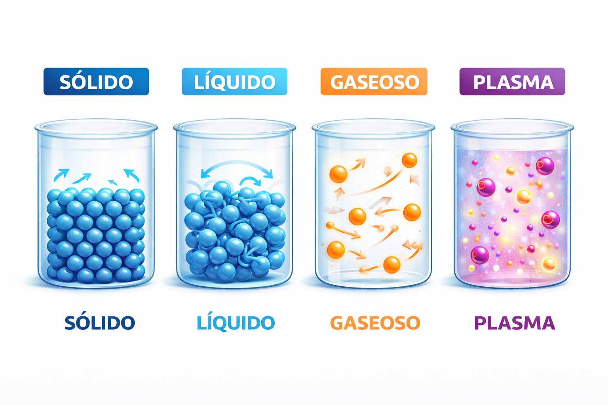
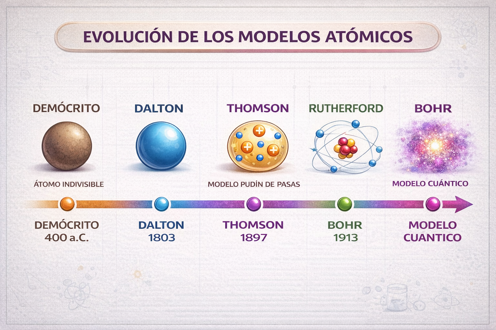
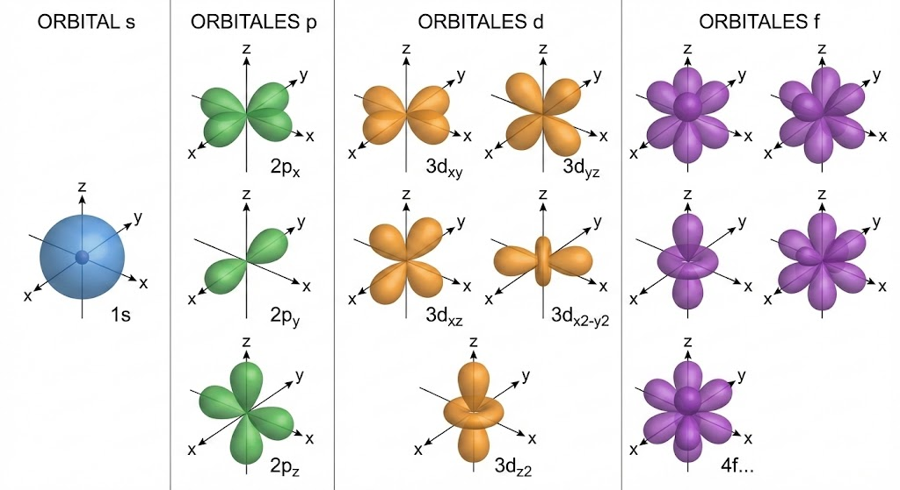
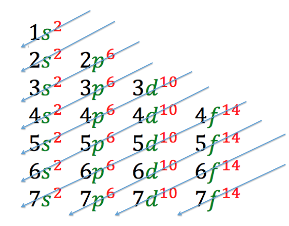
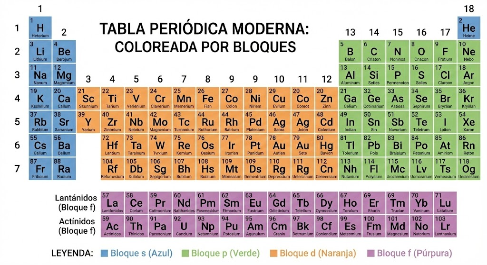
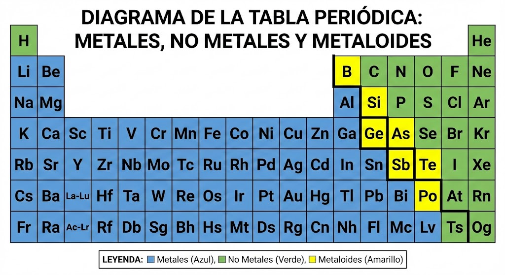
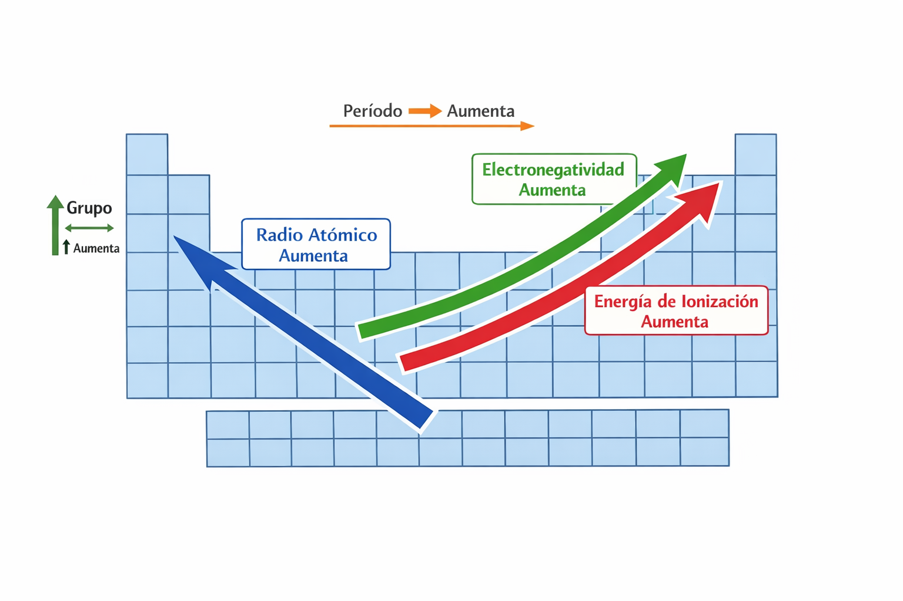
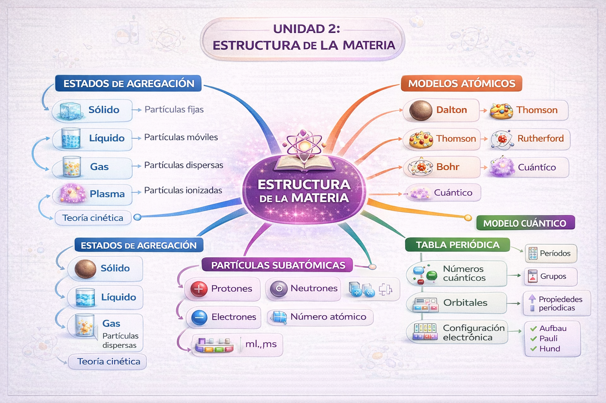

UNIDAD 2
El Átomo | Páginas 45-80 | 5 Temas | 36 páginas
"Si pudieras ver los átomos, el mundo nunca volvería a parecerte el mismo."
— Richard Feynman
En esta unidad explorarás la naturaleza íntima de la materia. Desde los estados de agregación que observas a simple vista, hasta la estructura del átomo que determina el comportamiento de todo lo que existe.
| Tema | Contenido | Págs. |
|---|---|---|
| 2.1 | Estados de agregación | 45-52 |
| 2.2 | Modelos atómicos | 53-60 |
| 2.3 | Modelo cuántico | 61-69 |
| 2.4 | Tabla periódica | 70-75 |
| 2.5 | Propiedades periódicas | 76-80 |
Exploremos tus conocimientos previos sobre la materia y el átomo.
1. ¿Cuáles son los tres estados de la materia que conoces? ¿Existe algún otro?
2. ¿Qué crees que le pasa a las partículas del agua cuando hierve?
3. Dibuja cómo imaginas que es un átomo:
4. ¿Qué partículas forman un átomo? Menciona las que conozcas:
5. En la tabla periódica, ¿qué información puedes encontrar sobre un elemento?
No te preocupes si algunas preguntas son difíciles. Esta evaluación nos ayuda a identificar qué tanto sabes y qué necesitamos reforzar durante la unidad.
Un estado de agregación es la forma física en que se presenta la materia, determinada por la organización y movimiento de sus partículas.
En una línea: Es cómo "se ve" la materia según qué tan juntas y qué tan rápido se mueven sus partículas.
Forma y volumen definidos
Volumen definido, forma variable
Sin forma ni volumen definidos
Gas ionizado, conductor
En el estado sólido, las partículas están muy cercanas entre sí, en posiciones fijas, y solo vibran alrededor de su posición de equilibrio. Las fuerzas de atracción entre partículas son muy fuertes.
| Forma | Definida, no cambia por sí sola |
| Volumen | Definido, muy difícil de comprimir |
| Partículas | Muy juntas, en posiciones fijas, solo vibran |
| Fuerzas | Muy fuertes entre partículas |
| Energía cinética | Baja (solo vibración) |
Partículas ordenadas en patrones geométricos regulares (cristales).
Ejemplos: Sal (NaCl), diamante, cuarzo, metales
Partículas sin orden definido, estructura irregular.
Ejemplos: Vidrio, plásticos, caucho, cera
Un cubo de hielo tiene forma definida. Si lo pones en un vaso, mantiene su forma de cubo. Las moléculas de agua están ordenadas en una estructura cristalina, vibrando en su lugar pero sin desplazarse.
Clasifica los siguientes sólidos como cristalinos (C) o amorfos (A):
Azúcar:
Chocolate:
Diamante:
Gelatina:
En el estado líquido, las partículas están juntas pero pueden moverse y deslizarse unas sobre otras. Las fuerzas de atracción son moderadas: suficientes para mantener el volumen, pero no para fijar la forma.
| Forma | Variable, adopta la forma del recipiente |
| Volumen | Definido, difícil de comprimir |
| Partículas | Juntas pero móviles, se deslizan entre sí |
| Fuerzas | Moderadas entre partículas |
| Energía cinética | Media (movimiento de traslación limitado) |
Viscosidad
Resistencia a fluir. La miel es más viscosa que el agua.
Tensión superficial
Tendencia de la superficie a comportarse como una membrana elástica.
Capilaridad
Capacidad de subir por tubos delgados contra la gravedad.
Un insecto puede caminar sobre el agua gracias a la tensión superficial. Las moléculas de la superficie se atraen entre sí y forman una "película" que soporta pequeños pesos. Si agregas jabón, la tensión disminuye y el insecto se hunde.
Ordena los siguientes líquidos de menor a mayor viscosidad:
Agua, miel, aceite de cocina, alcohol
Orden: 1. 2. 3. 4.
En el estado gaseoso, las partículas están muy separadas y se mueven a alta velocidad en todas direcciones. Las fuerzas de atracción son muy débiles, prácticamente despreciables.
| Forma | Indefinida, ocupa todo el recipiente |
| Volumen | Indefinido, altamente compresible |
| Partículas | Muy separadas, movimiento caótico y rápido |
| Fuerzas | Muy débiles, casi inexistentes |
| Energía cinética | Alta (movimiento rápido y en todas direcciones) |
El plasma es el cuarto estado de la materia y el más abundante en el universo (99% de la materia visible). Es un gas ionizado donde los electrones se han separado de los átomos.

La teoría cinética explica el comportamiento de la materia basándose en el movimiento de sus partículas. Es el modelo que unifica la comprensión de los estados de agregación.
Calor ≠ Temperatura. El calor es energía que se transfiere. La temperatura es la medida del movimiento promedio de las partículas. Cuando agregas calor, aumentas la energía cinética de las partículas, lo que puede aumentar la temperatura o provocar un cambio de estado.
Tabla de Observaciones:
| Temperatura | Estado observado | Movimiento de partículas | Distancia entre partículas |
|---|---|---|---|
| -50°C | |||
| 25°C | |||
| 150°C |
Reflexión: ¿Qué sucede con las partículas cuando aumentas la temperatura?
Los estados de agregación dependen de la energía cinética de las partículas, controlada por la temperatura. Más energía significa mayor movimiento, partículas más separadas y estados más "fluidos".
Un modelo científico es una representación simplificada de la realidad que nos ayuda a entender y predecir fenómenos. Los modelos evolucionan conforme se obtiene nueva evidencia.
En una línea: Un modelo no es "la verdad", es nuestra mejor explicación hasta el momento.
¿De qué está hecha la materia? Esta pregunta ha intrigado a la humanidad por más de 2,500 años. Los antiguos griegos propusieron que todo estaba hecho de cuatro elementos: tierra, agua, aire y fuego.
Filósofo griego que propuso que la materia estaba formada por partículas indivisibles llamadas "átomos" (del griego a-tomos = no divisible).
"Nada existe excepto átomos y espacio vacío; todo lo demás es opinión."
Las ideas de Demócrito fueron rechazadas por Aristóteles y olvidadas durante casi 2,000 años. La ciencia atómica moderna no comenzó hasta el siglo XIX con John Dalton.
John Dalton fue el primero en proponer una teoría atómica científica basada en evidencia experimental, no solo en filosofía.
Representación: Esfera sólida e indivisible
Según Dalton, ¿qué sucede con los átomos en la siguiente reacción?
2H₂ + O₂ → 2H₂O
J.J. Thomson descubrió el electrón mediante experimentos con rayos catódicos. Esto demostró que el átomo NO era indivisible y contenía partículas más pequeñas con carga negativa.
Thomson propuso que el átomo era una esfera de carga positiva con electrones (carga negativa) incrustados en ella, como pasas en un budín.
■ Carga positiva distribuida ● Electrones (negativos)
Thomson observó que los rayos catódicos se desviaban con campos eléctricos y magnéticos, siempre hacia el polo positivo. Concluyó que eran partículas con carga negativa. Calculó la relación carga/masa y demostró que eran iguales sin importar el material del cátodo.
Conclusión: Los electrones son componentes universales de todos los átomos.
Ernest Rutherford realizó el famoso experimento de la lámina de oro que revolucionó nuestra comprensión del átomo y refutó el modelo de Thomson.
● Núcleo (positivo, muy pequeño) ● Electrones (orbitando)
"Fue como si dispararas una bala de cañón a un papel de seda y rebotara hacia ti." El rebote de algunas partículas solo podía explicarse por un núcleo muy pequeño pero extremadamente denso.
Niels Bohr mejoró el modelo de Rutherford incorporando la teoría cuántica. Explicó por qué los electrones no caen al núcleo y por qué los elementos emiten luz de colores específicos.
Niveles de energía (n=1, 2, 3...) - Órbitas permitidas
La energía emitida en un salto cuántico depende de la frecuencia (f) o longitud de onda (λ).
E = h · f o E = h · c / λ
h = 6.626×10⁻³⁴ J·s (Planck)
c = 3×10⁸ m/s (Luz)

| Modelo | Representación | Aporte Principal | Limitación |
|---|---|---|---|
| Dalton | Esfera sólida | Teoría atómica científica | Átomo indivisible |
| Thomson | Budín de pasas | Descubrimiento del electrón | No hay núcleo |
| Rutherford | Sistema planetario | Núcleo atómico | Electrones deberían caer |
| Bohr | Órbitas cuantizadas | Niveles de energía | Solo funciona para H |
| Cuántico | Nubes de probabilidad | Orbitales, no órbitas | Modelo actual |
Cada modelo NO fue un "error", sino el mejor conocimiento disponible en su época. La ciencia avanza cuando nuevos experimentos revelan limitaciones y se proponen mejores explicaciones. Esto es exactamente cómo debe funcionar el método científico.
El átomo está formado por tres partículas fundamentales: protones, neutrones y electrones. Sus propiedades determinan la identidad y comportamiento de cada elemento.
| Partícula | Símbolo | Carga | Masa (u) | Ubicación |
|---|---|---|---|---|
| Protón | p⁺ | +1 | 1.0073 | Núcleo |
| Neutrón | n⁰ | 0 | 1.0087 | Núcleo |
| Electrón | e⁻ | -1 | 0.00055 | Orbitales |
u = unidad de masa atómica. El electrón es ~1,836 veces más ligero que el protón.
= Número de protones
= Define la identidad del elemento
= En un átomo neutro, Z = electrones
Ejemplo: Todo átomo con Z=6 es carbono
= Protones + Neutrones
= Masa del núcleo
= Los isótopos tienen diferente A
Fórmula: A = Z + N
Átomo Neutro:
Iones (con carga):
Notación Isotópica
AZX
Ejemplo: 126C = Carbono con 6 protones y 6 neutrones
La masa atómica en la tabla periódica es un promedio ponderado de todos los isótopos naturales.
Masa Promedio = (masa₁ × %₁) + (masa₂ × %₂) / 100
Ejemplo: Cloro tiene dos isótopos: Cl-35 (75%) y Cl-37 (25%).
Masa = (35 × 75 + 37 × 25) / 100 = 35.5 u
Instrucciones: Cada equipo construirá una maqueta de uno de los modelos atómicos asignados y expondrá sus características al grupo.
Tu equipo debe presentar:
| Modelo asignado: | |
| Científico que lo propuso: | |
| Año: | |
| Experimento clave: |
Descripción de tu maqueta (qué representa cada parte):
Un orbital es una región del espacio donde hay alta probabilidad (>90%) de encontrar un electrón. NO es una órbita fija, sino una "nube de probabilidad".
En una línea: El orbital describe DÓNDE probablemente está el electrón, no una trayectoria definida.
| Órbita (Bohr) | Orbital (Cuántico) |
|---|---|
| Trayectoria circular definida | Región de probabilidad |
| El electrón "está" en un punto | El electrón "puede estar" en una zona |
| 2D (plano) | 3D (volumen) |
| Determinista | Probabilístico |
Imagina un ventilador encendido. No puedes ver dónde está cada aspa en un instante, pero sabes que están en algún lugar del círculo que forman. El orbital es como esa zona donde "probablemente" está el electrón.
Cada electrón en un átomo se describe con cuatro números cuánticos que definen su estado energético y ubicación probable. Son como la "dirección" del electrón dentro del átomo.
| Número | Símbolo | Valores | Indica |
|---|---|---|---|
| Principal | n | 1, 2, 3, 4... | Nivel de energía (tamaño del orbital) |
| Secundario | l | 0 a (n-1) | Forma del orbital (s, p, d, f) |
| Magnético | mₗ | -l a +l | Orientación en el espacio |
| Espín | mₛ | +½ o -½ | Giro del electrón |
Define el nivel de energía o "capa" donde se encuentra el electrón. A mayor n, mayor energía y mayor distancia promedio al núcleo.
| n | Nombre | Máx. electrones |
|---|---|---|
| 1 | K | 2 |
| 2 | L | 8 |
| 3 | M | 18 |
| 4 | N | 32 |
Máximo de electrones por nivel
Máx = 2n²
Para hallar los números cuánticos (n, l, mₗ, mₛ) del último electrón:
Calcula el máximo de electrones para n=5:
Máx = 2(5)² = 2(25) =
El número cuántico secundario (l) determina la forma del orbital. Cada valor de l corresponde a un tipo de orbital con geometría característica.
| l | Tipo | Forma | Orientaciones (mₗ) | Máx. e⁻ |
|---|---|---|---|---|
| 0 | s | Esférica | 1 (mₗ = 0) | 2 |
| 1 | p | Bilobular (8) | 3 (mₗ = -1, 0, +1) | 6 |
| 2 | d | Tetralobular | 5 (mₗ = -2 a +2) | 10 |
| 3 | f | Compleja | 7 (mₗ = -3 a +3) | 14 |
Orbital s
Esférico
Orbital p
Dos lóbulos
Orbital d
Cuatro lóbulos
El valor de l depende de n. Los valores posibles de l van de 0 hasta (n-1).

Los electrones llenan los orbitales en orden de energía creciente. Primero se llenan los orbitales de menor energía antes de pasar a los de mayor energía.
"Aufbau" significa "construcción" en alemán. Construimos la configuración electrónica desde el nivel más bajo hacia arriba.
El orden de energía NO sigue simplemente los niveles (1, 2, 3...). Se usa la regla (n + l):
Los orbitales se llenan en orden de menor a mayor valor de (n + l). Si dos orbitales tienen el mismo (n + l), se llena primero el de menor n.
| Orbital | n | l | n + l | Orden |
|---|---|---|---|---|
| 1s | 1 | 0 | 1 | 1° |
| 2s | 2 | 0 | 2 | 2° |
| 2p | 2 | 1 | 3 | 3° |
| 3s | 3 | 0 | 3 | 4° (menor n) |
| 3p | 3 | 1 | 4 | 5° |
| 4s | 4 | 0 | 4 | 6° (menor n) |
| 3d | 3 | 2 | 5 | 7° |
Aunque el orbital 3d está en el nivel 3, su forma y penetración hacen que tenga mayor energía que el 4s. Por eso el 4s se llena primero.
El Diagrama de Moeller (o regla de las diagonales) es una herramienta visual para recordar el orden de llenado de orbitales.

1s → 2s → 2p → 3s → 3p → 4s → 3d → 4p → 5s → 4d → 5p → 6s → 4f → 5d → 6p → 7s → 5f → 6d → 7p
| Tipo de orbital | Valor de l | Número de orbitales | Electrones máx. |
|---|---|---|---|
| s | 0 | 1 | 2 |
| p | 1 | 3 | 6 |
| d | 2 | 5 | 10 |
| f | 3 | 7 | 14 |
Dos electrones no pueden tener los 4 números cuánticos iguales.
En un mismo orbital solo caben 2 electrones, y deben tener spines opuestos (↑↓).
Los electrones se distribuyen en orbitales degenerados con spines paralelos.
Primero un electrón por orbital, todos con el mismo spin. Luego se aparean.
Correcto (Regla de Hund):
Incorrecto:
Los electrones "prefieren" estar solos antes de aparearse. Es como si cada uno quisiera su propia habitación.
Imagina un hotel donde cada piso es un nivel de energía y cada habitación es un orbital:
La configuración electrónica describe cómo se distribuyen los electrones en los orbitales de un átomo.
Se escribe: subnivelnúmero de electrones
| Elemento | Z | Configuración electrónica |
|---|---|---|
| Hidrógeno (H) | 1 | 1s¹ |
| Carbono (C) | 6 | 1s² 2s² 2p² |
| Oxígeno (O) | 8 | 1s² 2s² 2p⁴ |
| Sodio (Na) | 11 | 1s² 2s² 2p⁶ 3s¹ |
| Cloro (Cl) | 17 | 1s² 2s² 2p⁶ 3s² 3p⁵ |
| Hierro (Fe) | 26 | 1s² 2s² 2p⁶ 3s² 3p⁶ 4s² 3d⁶ |
Para elementos pesados, se usa el gas noble anterior entre corchetes:
Fe: [Ar] 4s² 3d⁶ (en lugar de escribir toda la configuración)
Algunos elementos son más estables con subniveles d llenos (d¹⁰) o semi-llenos (d⁵).
Un electrón del orbital 4s salta al 3d para ganar estabilidad.
Son átomos o iones que tienen el mismo número de electrones (y misma configuración).
Ejemplo con Neón (10e⁻):
F⁻ (9p⁺ + 1e⁻ = 10e⁻)
Na⁺ (11p⁺ - 1e⁻ = 10e⁻)
Mg²⁺ (12p⁺ - 2e⁻ = 10e⁻)
Los electrones de valencia son los electrones del nivel de energía más externo (mayor n). Son los responsables de las propiedades químicas y los enlaces.
Regla práctica: Para elementos representativos (grupos principales), el número de electrones de valencia = número del grupo.
| Grupo | e⁻ valencia | Config. externa | Ejemplos |
|---|---|---|---|
| 1 (IA) | 1 | ns¹ | Li, Na, K |
| 2 (IIA) | 2 | ns² | Be, Mg, Ca |
| 13 (IIIA) | 3 | ns² np¹ | B, Al, Ga |
| 14 (IVA) | 4 | ns² np² | C, Si, Ge |
| 15 (VA) | 5 | ns² np³ | N, P, As |
| 16 (VIA) | 6 | ns² np⁴ | O, S, Se |
| 17 (VIIA) | 7 | ns² np⁵ | F, Cl, Br |
| 18 (VIIIA) | 8 | ns² np⁶ | Ne, Ar, Kr |
Instrucciones: Completa la configuración electrónica de cada elemento.
| Elemento | Z | Configuración electrónica | e⁻ valencia |
|---|---|---|---|
| Boro (B) | 5 | ||
| Neón (Ne) | 10 | ||
| Aluminio (Al) | 13 | ||
| Azufre (S) | 16 | ||
| Potasio (K) | 19 | ||
| Calcio (Ca) | 20 | ||
| Zinc (Zn) | 30 | ||
| Bromo (Br) | 35 |
Explora orbitales atómicos en 3D con simuladores como PhET (University of Colorado) o Falstad Hydrogen Atom. Estos recursos permiten visualizar las formas y probabilidades de encontrar electrones en diferentes orbitales.
TEMA 2.4
1869
Mendeléyev ordena elementos por masa atómica, predice elementos desconocidos
1913
Moseley descubre que el número atómico es la clave del ordenamiento
Actualidad
118 elementos organizados por número atómico y propiedades
"Las propiedades de los elementos son función periódica de sus números atómicos." Esto significa que las propiedades se repiten de forma regular al aumentar Z.
Hay 7 periodos. El número del periodo indica el nivel de energía más alto ocupado (valor de n).
Hay 18 grupos. Los elementos del mismo grupo tienen igual número de electrones de valencia.

| Grupo | Nombre | e⁻ val. | Características | Ejemplos |
|---|---|---|---|---|
| 1 | Metales alcalinos | 1 | Muy reactivos, blandos, forman bases | Li, Na, K |
| 2 | Alcalinotérreos | 2 | Reactivos, forman óxidos básicos | Mg, Ca, Ba |
| 13 | Grupo del boro | 3 | Metales y metaloides | B, Al, Ga |
| 14 | Grupo del carbono | 4 | Base de la vida, semiconductores | C, Si, Ge |
| 15 | Nitrogenoides | 5 | No metales y metaloides | N, P, As |
| 16 | Calcógenos | 6 | No metales, esenciales para la vida | O, S, Se |
| 17 | Halógenos | 7 | Muy reactivos, forman sales | F, Cl, Br, I |
| 18 | Gases nobles | 8 | Inertes, estables, monoatómicos | He, Ne, Ar, Kr |
Los átomos tienden a ganar, perder o compartir electrones para alcanzar 8 electrones de valencia (configuración de gas noble). Esta es la base de la formación de enlaces.
~80% de los elementos son metales
Incluyen C, N, O, S, P, halógenos, gases nobles
Tienen propiedades intermedias entre metales y no metales. Son semiconductores, fundamentales para la electrónica.
Elementos: B, Si, Ge, As, Sb, Te, Po (y a veces At)

Grupos 3-12. Se caracterizan por llenar orbitales d. Tienen propiedades únicas:
Elementos 57-71. Llenan orbitales 4f. Usados en imanes, pantallas LED, baterías. Ejemplo: Neodimio (Nd) en imanes potentes.
Elementos 89-103. Llenan orbitales 5f. Todos son radiactivos. Incluyen U (uranio) y Pu (plutonio).
| Elemento | Símbolo | Aplicación |
|---|---|---|
| Neodimio | Nd | Imanes de audífonos, discos duros |
| Europio | Eu | Color rojo en pantallas LED |
| Terbio | Tb | Color verde en pantallas |
| Litio | Li | Baterías de celulares |
Completa la información de cada elemento:
| Símbolo | Nombre | Grupo | Periodo | Tipo |
|---|---|---|---|---|
| Na | ||||
| Cl | ||||
| Fe | ||||
| Si | ||||
| Ar |
Explora la tabla periódica con información detallada de cada elemento en: ptable.com - Incluye propiedades, isótopos, abundancia y aplicaciones.
TEMA 2.5
Son propiedades que varían de manera predecible a lo largo de los periodos y grupos de la tabla periódica. Dependen de:
La atracción neta que sienten los electrones externos. Aumenta hacia la derecha en un periodo (más protones, mismo nivel).
Los electrones internos "protegen" a los externos de la atracción nuclear. Aumenta hacia abajo en un grupo (más niveles).
El radio atómico es la mitad de la distancia entre los núcleos de dos átomos idénticos enlazados.
En un periodo (→)
DISMINUYE
Más protones atraen más fuerte a los electrones del mismo nivel.
En un grupo (↓)
AUMENTA
Se agregan niveles de energía más alejados del núcleo.
Es la energía mínima necesaria para arrancar un electrón de un átomo en estado gaseoso: X(g) → X⁺(g) + e⁻
En un periodo (→)
AUMENTA
Mayor Z* atrae más fuerte a los electrones.
En un grupo (↓)
DISMINUYE
Electrones más alejados son más fáciles de quitar.
Radio atómico y energía de ionización tienen tendencias opuestas: átomo más pequeño = electrones más difíciles de quitar.
La electronegatividad mide la capacidad de un átomo para atraer electrones compartidos en un enlace químico.
Escala de Pauling: va de 0.7 (Fr) a 4.0 (F). El flúor es el elemento más electronegativo.
En un periodo (→)
AUMENTA
Mayor carga nuclear atrae más los electrones de enlace.
En un grupo (↓)
DISMINUYE
Electrones de enlace más alejados del núcleo.
| Elemento | EN | Elemento | EN | Elemento | EN |
|---|---|---|---|---|---|
| F | 4.0 | O | 3.5 | N | 3.0 |
| Cl | 3.0 | C | 2.5 | H | 2.1 |
| Na | 0.9 | K | 0.8 | Cs | 0.7 |
La diferencia de electronegatividad entre átomos determina el tipo de enlace: ΔEN > 1.7 = iónico, ΔEN < 1.7=covalente.

| Propiedad | En periodo (→) | En grupo (↓) | Máximo |
|---|---|---|---|
| Radio atómico | ↓ Disminuye | ↑ Aumenta | Fr (francio) |
| Energía ionización | ↑ Aumenta | ↓ Disminuye | He (helio) |
| Electronegatividad | ↑ Aumenta | ↓ Disminuye | F (flúor) |
| Afinidad electrónica | ↑ Aumenta* | ↓ Disminuye | Cl (cloro) |
*Con algunas excepciones (grupos 2, 15, 18)
| Competencia | Lo domino | Necesito repasar | No lo entendí |
|---|---|---|---|
| Explico los estados de la materia | ☐ | ☐ | ☐ |
| Describo los modelos atómicos | ☐ | ☐ | ☐ |
| Identifico partículas subatómicas | ☐ | ☐ | ☐ |
| Escribo configuraciones electrónicas | ☐ | ☐ | ☐ |
| Uso la tabla periódica correctamente | ☐ | ☐ | ☐ |
| Predigo tendencias periódicas | ☐ | ☐ | ☐ |
"Todo lo que ves, tocas y respiras está hecho de átomos. Comprender su estructura es comprender la base de toda la química, la biología y la tecnología. Los mismos átomos que forman las estrellas forman tu cuerpo."

Siguiente: Unidad 3 - Enlaces Químicos e Ingeniería de Materiales